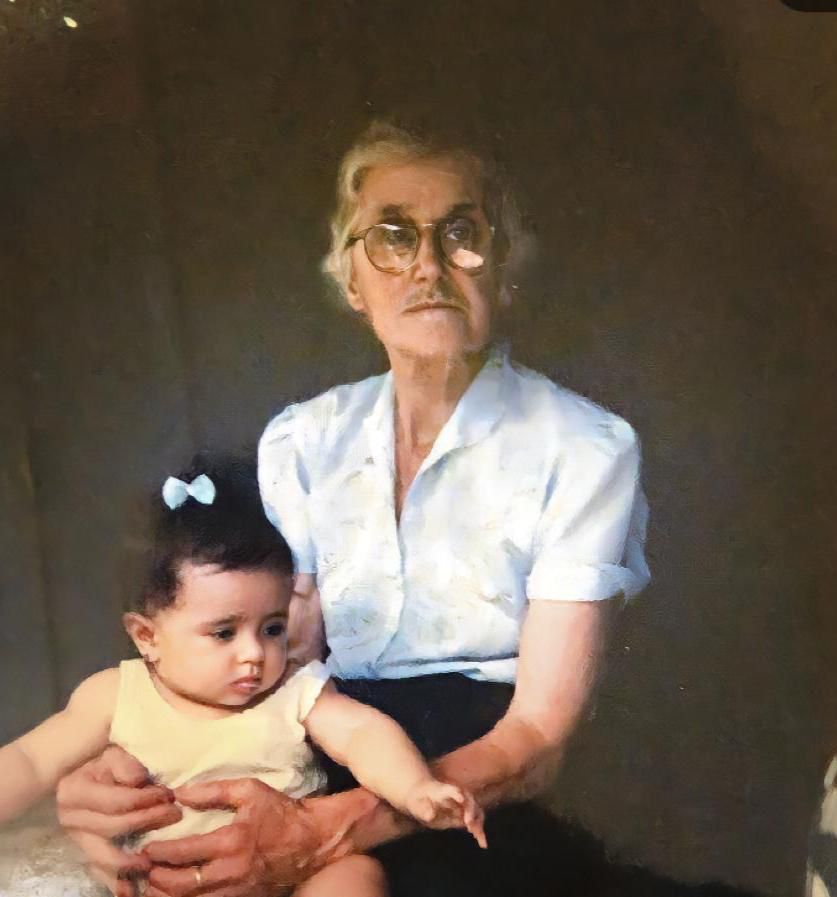
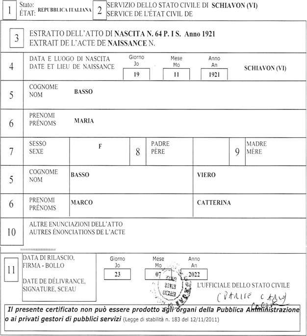

Maria Basso Golin
Maria Basso nasceu na comune de Schiavon, província de Vicenza, na Itália, aonde residiam os pais Marco e Catterina, antes de vir para o Brasil. Ela é a primeira filha mulher (5º filho) do primeiro casamento de Marco Basso.
Maria veio ao Brasil com 3 anos, sendo a filha mais velha. Perdeu a mãe com seis anos de idade (26/12/1926 - data de falecimento da mãe Catterina), então ajudou a criar os filhos mais novos e depois os filhos do segundo casamento de Marco Basso e Maria Pedrazzani. Passou a infância e a juventude em Linha Salvação, não estudou.
Casou-se aos 30 anos, com Mario Golin, em 02/05/1953 e foram morar na linha São Luiz, a cerca de 08 quilômetros da sede do município de Encantado.
A família do marido de Mario Golin que também eram da comuna de Schiavon, Itália vieram para o Brasil em agosto de 1924 e foram residir em linha São Luiz, interior do município de Encantado.
Mais tarde mudaram-se para Linha Bonita Alta. Passaram a ser vizinhos do tio Catarino Basso, Pedro Dama, Joaquim Delazari, Giordano Golin e Egídio Fraporti. Participava do grupo Santana, da Igreja santo Isidoro, na linha Bonita Alta. Teve 8 filhos, (2 falecidos ainda crianças), Nelson, Luiz, Nédio, Inês, Valdir e Adilar. Como boa família de descendentes de italianos, rezavam o terço em casa com a família todas as noites e participava muito das atividades da comunidade.
Sempre trabalhou na lavoura, cultivando soja, milho, trigo, criando galinhas, vacas de leite e porcos. Gostava muito de ir à Linha Salvação visitar os irmãos Pedro Basso e Luiz Basso e amigos de infância que lá fizera, Sr. Henrique e Fiori Gaboardi a família Rizzi e outros amigos.
Com a aposentadoria da Sra. Maria Basso, a família passou a residir próximo da Igreja de Linha Bonita Alta, na RS 332 Km 24, onde podia participar ativamente dos eventos da comunidade como, rosário do terço, missas, velórios e festas. Os filhos foram morar, trabalhar e estudar em Porto Alegre.
Faleceu com 79 anos de idade, no dia 20 de junho de 2000 e foi enterrada no cemitério da comunidade.
Cópia certidão de nascimento de Maria Basso abaixo.

Certidão de Nascimento de Maria Basso
Doença de ATAXIAS ou de MACHADO-JOSEPH
A família de Maria Basso Golin casada com seu Mario Golin teve 06 filhos, 05 homens e uma mulher.
Dois filhos do casal, o mais velho Nelson e o quinto Valdir depois dos vinte anos de idade desenvolveram a “Doença de Machado-joseph ou Ataxias Dominantes.
Ataxia é uma doença, até então incurável, que pode ser herdada ou adquirida. Apesar de ser pouco conhecida, inclusive pelos médicos, a Ataxia já afeta milhares de pessoas no mundo todo. Atualmente, existem muitos estudos em andamento, mas ainda não existem tratamentos com medicamentos.
Lesões no cerebelo ou em suas conexões levam a uma condição chamada “Ataxia” que causa um conjunto de desordens neurológicas, degenerativas e progressivas. Estas doenças afetam a coordenação motora, o equilíbrio, a falar e, em alguns casos, a visão, a audição e funcionamento cardíaco.
A Ataxia pode se manifestar em crianças ou na vida adulta. Em média, a doença tende a manifestar-se por volta dos trinta anos. Em algum momento da vida, tem um início sútil e progride de forma gradual, afetando principalmente o caminhar, produzindo oscilações e desvios para os lados e, com o passar do tempo, até mesmo quedas, obrigando o portador a se socorrer de bengalas e, posteriormente, cadeira de rodas. Afetam também a fala, a deglutição de alimentos e a visão.
Os portadores de ataxia, em momento algum, perdem a noção do que está acontecendo a sua volta, tendo o intelecto preservado. Enquanto o cérebro trabalha na velocidade normal, o corpo responde em câmera lenta. Por essas razões, os portadores desta doença, com o passar do tempo, são forçados a pararem de trabalhar e de terem uma vida social.
Cuidados para melhorar a sintomatologia
Embora não exista um tratamento que previna a doença ou interrompa o curso dela, alguns cuidados podem ser tomados para melhorar a qualidade de vida dos portadores, como: fisioterapia, fonoaudiologia, terapia ocupacional e psicoterapia. Todas elas auxiliam na preservação das funções motoras. Ensinam os pacientes e os cuidadores como lidar com situações ocorridas no dia a dia, tais como: o engasgo, a marcha desiquilibrada e os problemas de motricidade fina. Eventualmente, pode ser necessário o uso de medicamentos para diminuir alguns desses sintomas, principalmente, a depressão. O especialista habilitado na sua prescrição é o neurologista.
Fonte:
AAPPAD – Associação dos Amigos, Parentes e Portadores de Ataxias Dominantes.
www.aappad.com.br